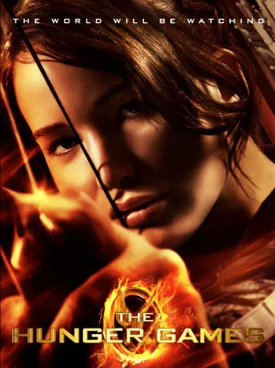
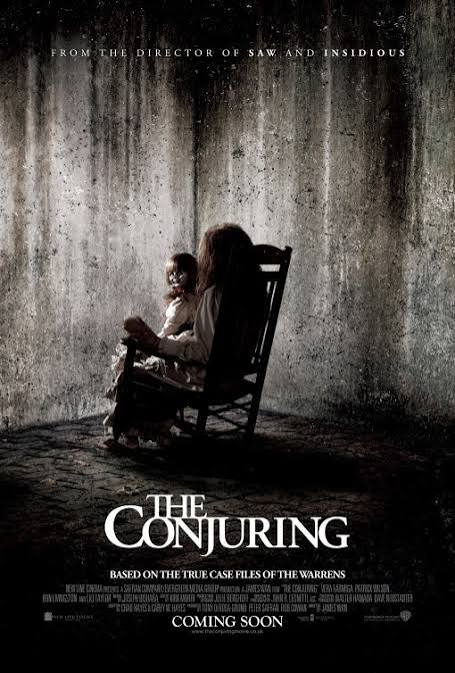
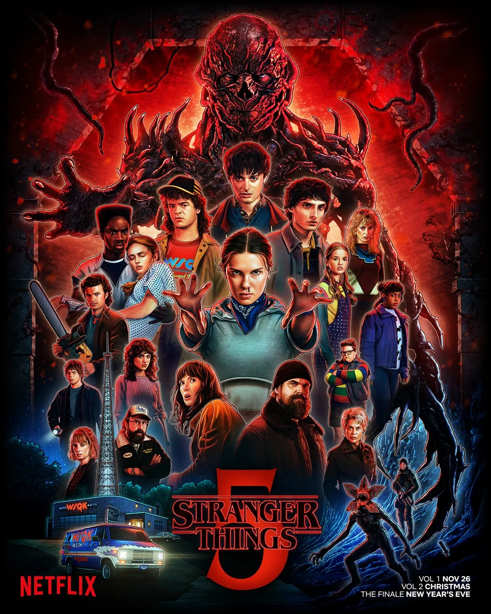
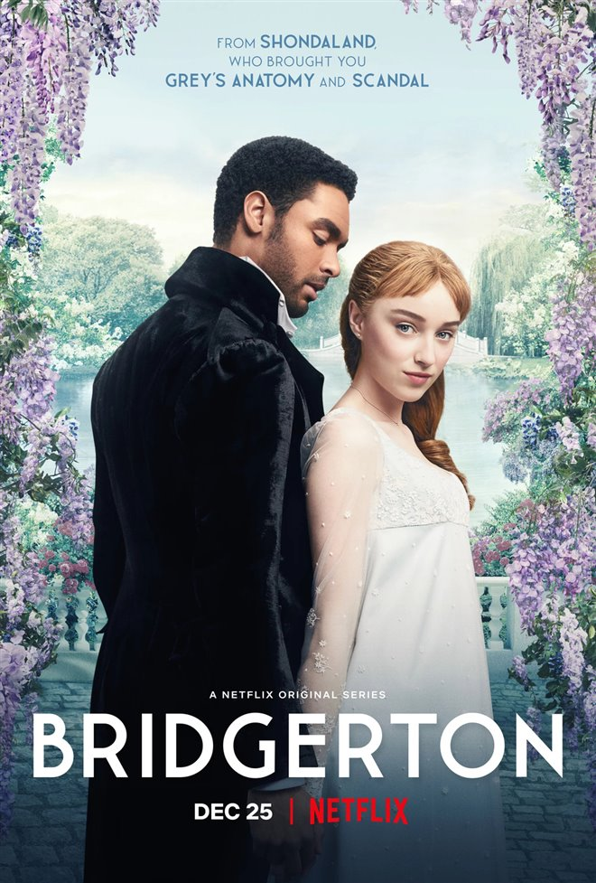
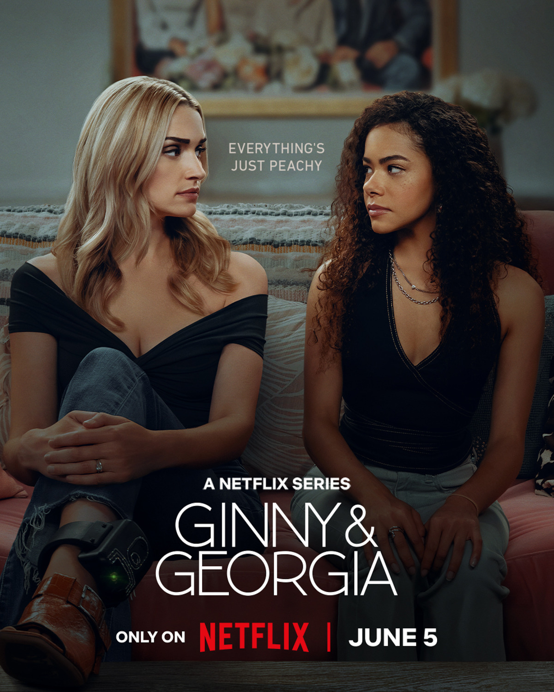

הסרטים והסדרות המומלצים שלנו
ברוכים הבאים ל- NETFLIX כאן תמצאו סרטים וסדרות שכדאי לראות - עם תקציר, ז'אנר ודירוג!

(Inception) התחלה - סרט
שנה: 2010
ז'אנר: מדע בידיוני, פעולה
דירוג: 8.8 כוכבים
גנב מיוחד נכנס לחלומות של אנשים כדי לגנוב סודות. הפעם הוא מקבל משימה הפוכה: לשתול רעיון
לעמוד הסרט ב-IMDb
(The Hunger Games) משחקי הרעב - סרט
שנה: 2012
ז'אנר: מדע בידיוני, אקשן, הרפתקאות
דירוג: 9 כוכבים
קטניס נבחרת להשתתף בתחרות הישרדות אכזרית שמשודרת בטלוויזיה, ונאבקת לשנות את גורלה.
לעמוד הסרט ב-IMDb
(The Conjuring) לזמן את הרוע - סרט
שנה: 2013
ז'אנר: אימה על-טבעית
דירוג: 7.5 כוכבים
זוג חוקרי תופעות על-טבעיות מגיע לבית משפחה שמתרחשים בו אירועים מפחידים מאוד.
לעמוד הסרט ב-IMDb
(Stranger Things) דברים מוזרים - סדרה
שנה: 2016-2025
ז'אנר: מדע בידיוני, מסתורין, דרמה
דירוג: 8.5 כוכבים
כשילד נעלם בעיירה קטנה,חבריו מגלים ילדה מסתורית, ניסויים סודיים וממד מפחיד שמסתתר מתחת לפני השטח.
לעמוד הסרט ב-IMDb
(Bridgerton) ברידג'רטון - סדרה
שנה: 2020-היום
ז'אנר: רומנטיקה, דרמה
דירוג: 7.5 כוכבים
משפחת ברידג'רטון מנווטת בין אהבות, סודות ושערוריות בחברה הגבוהה של לונדון בתקופת הריג'נסי, כשזהות מסתורית מפיצה רכילות על כולם.
לעמוד הסרט ב-IMDb
(Ginny & Georgia) ג'יני וג'ורג'יה - סדרה
שנה: 2021-היום
ז'אנר: דרמה, קומדיה שחורה, מסתורין
דירוג: 7.5 כוכבים
נערה מתבגרת עוברת לעיירה חדשה עם אמה הכריזמטית, אבל מאחורי החיים החדשים והמשפחה המושלמת לכאורה מסתתרים סודות אפלים.
לעמוד הסרט ב-IMDb